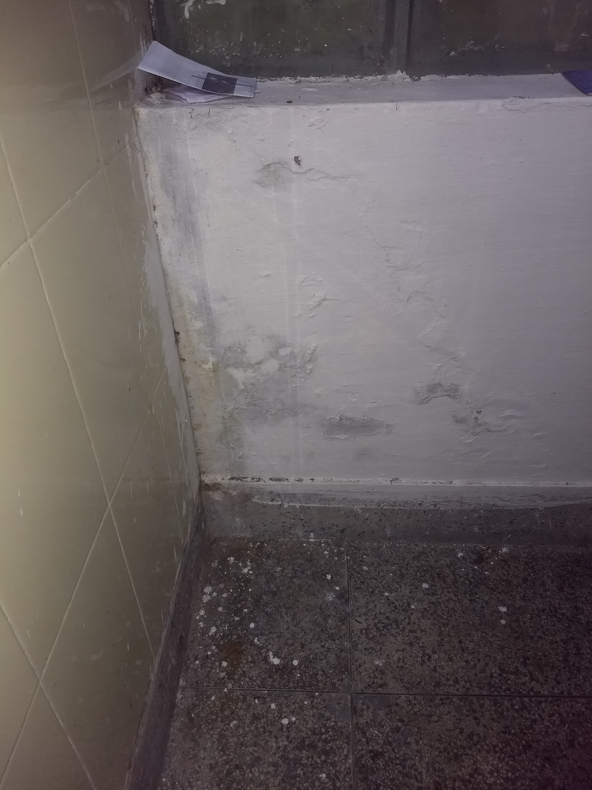
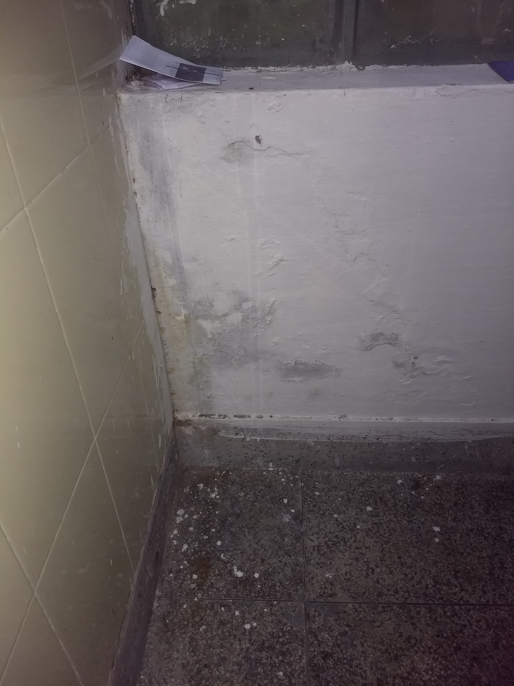

Life at IITR
Hostel Life (2/4)
(This blog was originally written on Aug 30, 2017. Any updates have been mentioned alongside the text as felt necessary)
Welcome back everyone!!
In this blog I’ll be focusing mainly on the basic needs of a person – “Food, Shelter and Clothes”.
Before I begin, I want to mention that (probably) I am the most inexperienced person to be writing
this blog because I have lived in this place(IITR) only for 2 months ,i.e., only (1/24)th of the time
that I am going to spend here. But the whole purpose of these series of blogs is to enable the world
to peep in and know a little about the life of a fresher at IITR in his/her initial days.
Hostel Rooms ‐ This is probably the first thing that you might be curious to know about.
The building of our Bhawan (Hostel) is more than 80 years old. After seeing the building for the first time, all hopes of a good hostel fade away instantly. But wait, the worst is yet to come. You open the door of your room and boom! You get to see the typical infrastructure that you expect from a “government” building in India. Everything is wearied out. The study table, the bed & the almirah (it doesn’t even qualify to be called an almirah) looked like they had been abused for a millennium. (I apologize if I go too far) To worsen the situation further, my room is adjacent to the bathroom which makes my room even more vulnerable to termite (which, the supervisor mentioned, is a problem in the whole campus!). There are more lizards in the corridors than there are students living there. Though the bathrooms are cleaned every day, their condition is pathetic. Have a look ‐
 

Coming to the watercoolers, see yourself. Once, I even saw a dead rat near it ‐

The corridors look something like this ‐
View from balcony ‐
But don’t just runaway yet, there are good things also. There are well maintained lawns which help to beautify the hostel.


Complaint registers are maintained to address the problems faced by students and of course, hostel life has its own perks. Moreover, once you get the room, it is now in YOUR hands how you maintain it and you should be prepared to face any situation in your life, because you don’t know what lies ahead.
Food ‐ The next important thing which bothers all of us is food. The mess food in Rajendra Bhawan (all first yearite
boys are given this hostel) is decent enough. This is how the mess infrastructure looks like ‐


I can’t comment much on the taste as we all might have very different opinions for the same food. But for those who think that mess food sucks, it doesn’t. In fact, every week you get to eat paneer, ice-cream, kheer, gulab juman, etc. though they are served as if diamond and gold are being distributed to us. South Indian food is rare but we have rice in the menu every day.


The bottom line is that if you expect the food to be 5-star, you will surely be disappointed but if you expect it to be a decent meal/balanced diet, then you will never complain about it. If you want to eat other than mess timings, there is a canteen inside the Bhawan also. Canteen ‐

Anyhow, if you ever get bored of the mess food (which we all get from time to time) there is CCD, Sattviko Idea Café and Guest House restaurants inside the campus only and a bunch of places to eat outside the campus, including Domino’s and Pizza Hut.
So, food here is not at all a problem (although if you are a foodie and like to try new food every once in a while, get ready to be disappointed (especially if you are from Delhi), as the variety and choice of food is very limited).
Clothes - There is not much to talk about clothes. The only point worth sharing is that decent laundry service has been provided inside the Bhawan only.

Transportation - As the campus is very huge (almost 365 acres) and motor vehicles are not allowed, commuting is very tedious and time consuming (especially when you are getting late for that early morning 8’o clock lecture). Hence for commuting inside the campus, e‐rickshaws/tuk‐tuks are available which will take you anywhere inside the campus for a fixed minimal charge of ₹10. Otherwise, you can also use a bicycle (which indeed most of us end up doing).
Internet - Another “need” which you will realize after coming to the college (if you haven’t realized it till now) is to have
an electronic device with you, be it a smartphone or a laptop, through which you can access the internet, because
virtually, almost every piece of information here is transmitted in the form of electronic media only, be it
assignments, notices or study material, everything is shared through LAN services provided inside the campus or
through platforms like Google, WhatsApp, Facebook, etc.
Talking about LAN, the internet speeds here at IITR are just amazing and no restrictions have been placed whatsoever.
You practically get 50+mbps up/down at minimum (which is the only thing which made me feel like home)! Wi-Fi is also
provided all over the campus but it is unstable. Hence, internet connectivity is not at all an issue in IITR. Here
is the screenshot of the speed test ‐
Hence, I would like to end this blog by saying that you are going to miss your “Home sweet Home”, but once you get used to things, IITRoorkee is a good place to live in.
In the next blog, I will talk about academic affairs such as the quality of lectures, the library, research facilities,
etc. and also about extracurricular activities and all kinds of crazy stuff that we do here at IITR.
Have more questions? Feel free to comment below.
P.S. - Any fellow IITRoorkian reading this blog, please comment if you think I forgot to mention any valuable point and also feel free to share your thoughts and experiences with me so that I can improve the quality of my upcoming blogs and perhaps reach a greater number of audience.